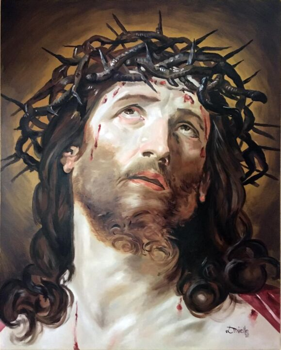
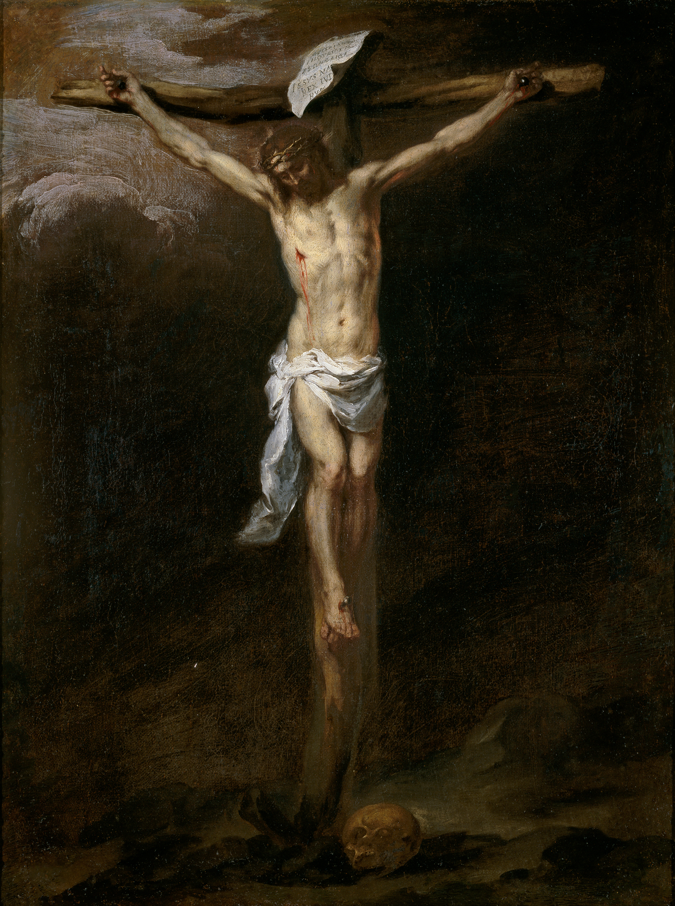
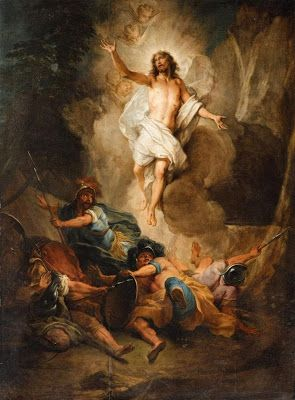
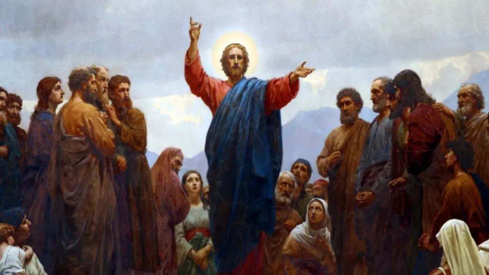

O Rei do Judeus, o Salvador
Jesus é reconhecido como o Filho de Deus, enviado ao mundo para trazer a salvação à humanidade. Ele é verdadeiro filho do homem e verdadeiro Deus encarnado, concebido de forma divina de Maria. Sua presença entre os homens revelou o verdadeiro amor, a misericórdia e a justiça.
BiografiaNascido em Belém e criado em Nazaré, Jesus viveu com simplicidade e sabedoria desde a infância. Aos 30 anos, iniciou sua missão pública, anunciando a paz, curando os enfermos, acolhendo os marginalizados e ensinando com autoridade. Reuniu discípulos e os formou para continuar sua missão divina.
EvangelhosDiversas obras cinematográficas relatam a trajetória de Jesus com profundidade espiritual e histórica:
Jesus sendo açoitado no filme "Paixão de Cristo"
Jesus pregou o amor incondicional(amor ao próximo), o verdadeiro perdão, a humildade e o serviço ao próximo. Ele chamou a todos para viverem em verdade, com fé e compaixão. Suas palavras continuam a inspirar milhões: “Bem-aventurados os que promovem a paz” e “Amai-vos uns aos outros como eu vos amei”.
Sermão da MontanhaJesus entregou a própria vida para redimir os pecados do mundo sendo o ultimo cordeiro. Sua paixão, morte e ressurreição transformaram a história da humanidade, oferecendo a todos a esperança da vida eterna. Ensinou o valor do sacrifício e da fidelidade à verdade, mesmo diante das persiguições e injustiças e da dor.
Jesus foi condenado injustamente, sofreu e morreu na cruz, revelando o maior ato de amor. Ao terceiro dia, ressuscitou dos mortos, vencendo o pecado e a morte. Sua ressurreição é um sinal de vitória e de esperança para todos os que creem. Após ressuscitar, apareceu a seus discípulos e prometeu estar com todos até o fim dos tempos.


Sim, Jesus de Nazaré realmente existiu, vou deixar alguns videos que mostram de fatos históricos que ele realmente existiu.
Embora Jesus Cristo seja a figura central do cristianismo, sua importância transcende essa tradição religiosa. Em outras religiões, especialmente no islamismo, Ele também é profundamente respeitado e reverenciado.
No islamismo, Jesus é conhecido como Isa e é considerado um dos mais importantes profetas de Deus. Ele é reconhecido como o Messias , nascido da Virgem Maria por um milagre divino. Os muçulmanos acreditam que Jesus realizou diversos milagres, como curar os doentes e ressuscitar os mortos, sempre com a permissão de Deus.
Embora o islamismo não reconheça Jesus como Filho de Deus ou como parte da Trindade, Ele é honrado como um mensageiro de grande pureza e importância espiritual. O Alcorão dedica diversas passagens à sua vida e missão, e os muçulmanos acreditam que Ele voltará no fim dos tempos como um sinal do Juízo Final.
Fontes de issa(Jesus no islã)
Durante sua vida entre nós, Jesus ensinou aos seus discípulos como rezar com confiança e simplicidade. Essa oração é conhecida como o Pai Nosso, uma das mais importantes da fé cristã. Nela, reconhecemos Deus como Pai, pedimos o essencial para viver, e nos comprometemos a perdoar, assim como desejamos ser perdoados.
"Pai nosso, que estais no céu, santificado seja o vosso nome; venha a nós o vosso reino; seja feita a vossa vontade, assim na terra como no céu.
O pão nosso de cada dia nos dai hoje; perdoai-nos as nossas ofensas, assim como nós perdoamos a quem nos tem ofendido;
e não nos deixeis cair em tentação, mas livrai-nos do mal. Amém."
